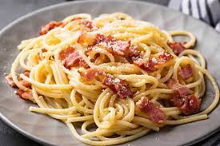

Carbonara

Description
This pasta dish with Roman origins is a sure win, calling for just 5 ingredients (not including salt and oil), and done from start to finish in 20 minutes.
It’s basically a pantry dive – spaghetti, bacon, garlic, eggs, and parmesan are all ingredients that are easy to have on hand and don’t spoil fast.
Ingredients
- 100g pancetta
- 50g pecorino cheese
- 50g parmesan
- 3 large eggs
- 350g spaghetti
- 2 plump garlic cloves, peeled and left whole
- 50g unsalted butter
- sea salt and freshly ground black pepper
Steps
- Put a large saucepan of water on to boil.
- Finely chop the 100g pancetta, having first removed any rind. Finely grate 50g pecorino cheese and 50g parmesan and mix them together.
- Beat the 3 large eggs in a medium bowl
- Add 1 tsp salt to the boiling water, add 350g spaghetti
- Squash 2 peeled plump garlic cloves
- While the spaghetti is cooking, fry the pancetta with the garlic.
- Keep the heat under the pancetta on low.
- Mix most of the cheese in with the eggs.
- Take the pan of spaghetti and pancetta off the heat.
- Add extra pasta cooking water to keep it saucy
- Use a long-pronged fork to twist the pasta on to the serving plate or bowl.
Back